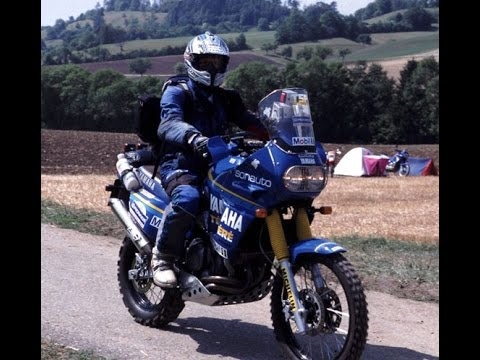
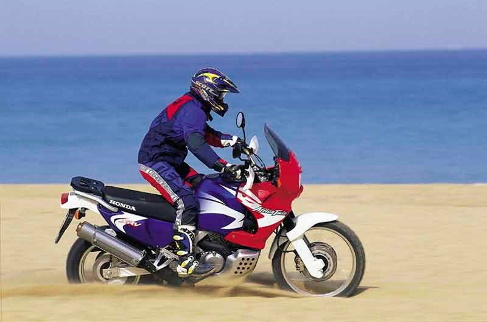
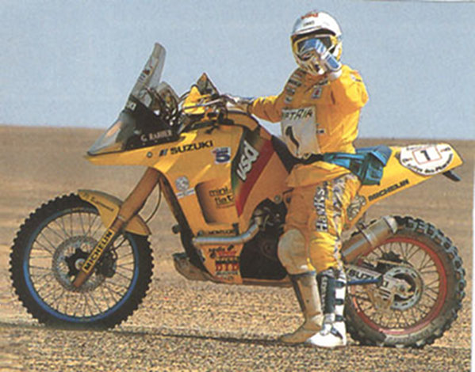

Yamaha Super Tenere
 The XTZ 750 is a larger, twin-cylinder version of the single-cylinder Yamaha XTZ 660 Ténéré. The XTZ 660 and XTZ 750 superseded the smaller, air-cooled Yamaha XT 600Z Ténéré. First sold in 1989, the SuperTénéré used the new Yamaha engine design containing 5-valve heads. A solid protective guard around the engine prevents damage. The front brake disks of the XTZ are provided with plastic covers. For normal road use these covers are beneficial, but they can make cooling of the brake disks more difficult when riding downhill. The XTZ 750 was discontinued in 1996, but not before the Dakar version YZE750 won the Dakar race twice, plus four more times as an 850. Owners/riders love the machine for its comfort and solid feel plus the long range fuel tank of 26 litres (5.7 imp gal; 6.9 US gal).
Honda Africa
 The XRV750 Africa Twin was a 742 cc (45.3 cu in) dual-sport based on the Honda NXR-750, which won the Paris-Dakar rally four times in the late 1980s. It was preceded by XRV650 Africa Twin, which was a lighter, higher specification version made in 1988 and 1989 by Honda Racing Corporation with a 650 cc engine producing 50 hp (37 kW).[1] The much earlier Honda XLV750R was a shaft driven motorcycle. Built in homage to the giant desert racers of the Paris-Dakar Rally, the Africa Twin is a large, dual sport bike, powered by a softly tuned V-twin engine. It has twin headlights, a windscreen, and a long dual seat which stretches back from the tank to an aluminium grabrail and plastic coated luggage rack. An aluminium bashplate protects the bottom of the engine from flying rocks and impacts. In December 1989 the original Honda XRV750 Africa Twin was launched, which became known as the 1990 model. In 1992 the Tripmaster computer was added. In 1993 the motorcycle had a major redesign including new frame, body work plastics, fuel tank, engine modifications and a lower seat. Nevertheless, it gained weight slightly. In 1996 the XRV gained an improved seat and clutch, larger silencer, modified upper fairing and luggage rack. However, the rear shock absorber lost some of its adjustability. In 2003 the Honda XRV750 Africa Twin ceased production. Nowadays good second hand examples are very much sought after among aficionados. Several aftermarket products exist with which to equip the bike such as crash bars to protect the vehicle's plastics and tank from damage in a low speed fall. The engine is a 742 cc, 6-valve, four spark plug, liquid-cooled V-twin. The long-travel suspension insulates the rider from uneven surfaces. The brakes are twin discs at the front and single disc at the rear. The later XRV's instruments feature a large trip computer LCD display mounted above the conventional speedometer and tachometer, styled like Dakar racers' navigational displays, and incorporates a range of extra electronic timers and trip meters.
Suzuki DR BIG
 Die Suzuki DR 800 S BIG ist ein Motorrad der Kategorie Reiseenduro, das von 1990 bis 1999 vom japanischen Unternehmen Suzuki hergestellt wurde. Es gibt unterschiedliche Angaben zu Leistung und Geräuschentwicklung, was aber auf die strengeren deutschen Vorschriften zurückzuführen ist. Der Motor hatte mit 779 cm³ den größten Hubraum aller serienmäßigen Einzylindermotorräder und Doppelzündung. Um die bei Einzylindern typischen starken Vibrationen zu unterdrücken, ist der luft-/ölgekühlte Motor mit zwei Ausgleichswellen ausgestattet. Die Motoren benötigen kaum Wartung, Kilometerstände bis 100.000 km sind bis zur ersten Motorrevision durchaus möglich. Das Motorrad beschleunigt in 5,5 Sekunden von 0 auf 100 km/h und erreicht eine Höchstgeschwindigkeit von 167 km/h.[1] Für den Einsatz im schweren Gelände ist die Maschine aufgrund ihres hohen Gewichts und hohen Schwerpunktes nicht geeignet, sehr wohl aber für Reisen auf schlechten Straßen oder Schotter, wobei auch der sehr große Benzintank nützlich ist. Das starr an der unteren Gabelbrücke montierte zusätzliche Frontschutzblech, Entenschnabel genannt, erregte bei der Vorstellung 1988 Aufsehen und Kritik, hat sich aber inzwischen zu einem gängigen Stilmerkmal von Reiseenduros entwickelt. Die Fahrgestellnummern beginnen mit SR 42 A/B und SR 43 A/B, wobei das B hinter der Modellbezeichnung auf den deutschen Bestimmungsort anzeigt, das A auf europäische Modelle. Es gibt nur kleine Unterschiede zwischen beiden, so sind die Blinkerrelais der B-Modelle dreipolig und die der A-Modelle zweipolig.